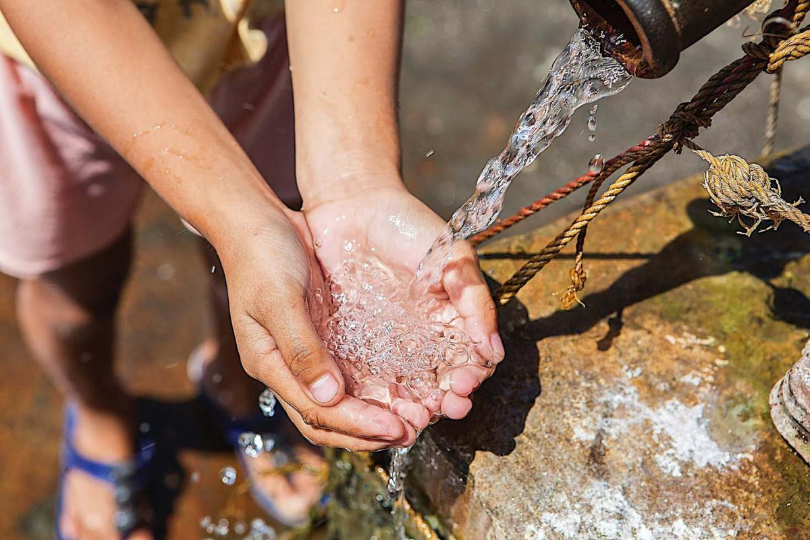

Know More
Sustainable Development Goal - 1
NO POVERTYAbout: The SDGs are a bold commitment to finish what we started, and end poverty in all forms and dimensions by 2030. This involves targeting the most vulnerable, increasing basic resources and services, and supporting communities affected by conflict and climate-related disasters.
Know moreKnow More
Sustainable Development Goal - 2
ZERO HUNGERAbout: The SDGs aim to end all forms of hunger and malnutrition by 2030, making sure all people–especially children–have sufficient and nutritious food all year. This involves promoting sustainable agricultural, supporting small-scale farmers and equal access to land, technology and markets. It also requires international cooperation to ensure investment in infrastructure and technology to improve agricultural productivity.
Know moreKnow More
Sustainable Development Goal - 3
GOOD HEALTH AND WELL-BEINGAbout: But the world is off-track to achieve the health-related SDGs. Progress has been uneven, both between and within countries. There’s a 31-year gap between the countries with the shortest and longest life expectancies. And while some countries have made impressive gains, national averages hide that many are being left behind. Multisectoral, rights-based and gender-sensitive approaches are essential to address inequalities and to build good health for all.
Know moreKnow More
Sustainable Development Goal - 4
QUALITY EDUCATIONAbout: Achieving inclusive and quality education for all reaffirms the belief that education is one of the most powerful and proven vehicles for sustainable development. This goal ensures that all girls and boys complete free primary and secondary schooling by 2030. It also aims to provide equal access to affordable vocational training, to eliminate gender and wealth disparities, and achieve universal access to a quality higher education.
Know moreKnow More
Sustainable Development Goal - 5
GENDER EQUALITYAbout: It is vital to give women equal rights land and property, sexual and reproductive health, and to technology and the internet. Today there are more women in public office than ever before, but encouraging more women leaders will help achieve greater gender equality.
Know moreKnow More
Sustainable Development Goal - 6
CLEAN WATER AND SANITATIONAbout: In 2015, 4.5 billion people lacked safely managed sanitation services (with adequately disposed or treated excreta) and 2.3 billion lacked even basic sanitation.
Know moreKnow More
Sustainable Development Goal - 7
AFFORDABLE AND CLEAN ENERGYAbout: Expanding infrastructure and upgrading technology to provide clean and more efficient energy in all countries will encourage growth and help the environment.
Know moreKnow More
Sustainable Development Goal - 8
DECENT WORK AND ECONOMIC GROWTHAbout: The SDGs promote sustained economic growth, higher levels of productivity and technological innovation. Encouraging entrepreneurship and job creation are key to this, as are effective measures to eradicate forced labour, slavery and human trafficking. With these targets in mind, the goal is to achieve full and productive employment, and decent work, for all women and men by 2030.
Know moreKnow More
Sustainable Development Goal - 9
INDUSTRY, INNOVATION AND INFRASTRUCTUREAbout: More than 4 billion people still do not have access to the Internet, and 90 percent are from the developing world. Bridging this digital divide is crucial to ensure equal access to information and knowledge, as well as foster innovation and entrepreneurship.
Know moreKnow More
Sustainable Development Goal - 10
REDUCED INEQUALITIESAbout: Income inequality requires global solutions. This involves improving the regulation and monitoring of financial markets and institutions, encouraging development assistance and foreign direct investment to regions where the need is greatest. Facilitating the safe migration and mobility of people is also key to bridging the widening divide.
Know moreKnow More
Sustainable Development Goal - 11
SUSTAINABLE CITIES AND COMMUNITIESAbout: Making cities sustainable means creating career and business opportunities, safe and affordable housing, and building resilient societies and economies. It involves investment in public transport, creating green public spaces, and improving urban planning and management in participatory and inclusive ways.
Know moreKnow More
Sustainable Development Goal - 12
RESPONSIBLE CONSUMPTION AND PRODUCTIONAbout: A large share of the world population is still consuming far too little to meet even their basic needs. Halving the per capita of global food waste at the retailer and consumer levels is also important for creating more efficient production and supply chains. This can help with food security, and shift us towards a more resource efficient economy.
Know moreKnow More
Sustainable Development Goal - 13
CLIMATE ACTIONAbout: There is no country that is not experiencing the drastic effects of climate change. Greenhouse gas emissions are more than 50 percent higher than in 1990. Global warming is causing long-lasting changes to our climate system, which threatens irreversible consequences if we do not act.
Know moreKnow More
Sustainable Development Goal - 14
LIFE BELOW WATERAbout: The world’s oceans – their temperature, chemistry, currents and life – drive global systems that make the Earth habitable for humankind. How we manage this vital resource is essential for humanity as a whole, and to counterbalance the effects of climate change.
Know moreKnow More
Sustainable Development Goal - 15
LIFE ON LANDAbout: Urgent action must be taken to reduce the loss of natural habitats and biodiversity which are part of our common heritage and support global food and water security, climate change mitigation and adaptation, and peace and security.
Know moreKnow More
Sustainable Development Goal - 16
PEACE, JUSTICE AND STRONG INSTITUTIONSAbout: The SDGs aim to significantly reduce all forms of violence, and work with governments and communities to end conflict and insecurity. Promoting the rule of law and human rights are key to this process, as is reducing the flow of illicit arms and strengthening the participation of developing countries in the institutions of global governance.
Know moreKnow More
Sustainable Development Goal - 17
PARTNERSHIPS FOR THE GOALSAbout: The goals aim to enhance North-South and South-South cooperation by supporting national plans to achieve all the targets. Promoting international trade, and helping developing countries increase their exports is all part of achieving a universal rules-based and equitable trading system that is fair and open and benefits all.
Know more
Zero Hunger
SDG - 2
AI can optimize agricultural processes, improve crop yields, and predict food shortages. Precision agriculture techniques using AI can minimize waste and enhance resource utilization
Gender Equality
SDG - 5
AI can help identify gender biases in various domains, such as hiring and language use. Data-driven insights from AI can inform policies promoting gender equality.

Clean Water and Sanitation
SDG - 6
AI can predict water supply and demand patterns, aiding efficient water management. Smart water distribution systems can reduce leaks and wastage using AI sensors.
Life on Land